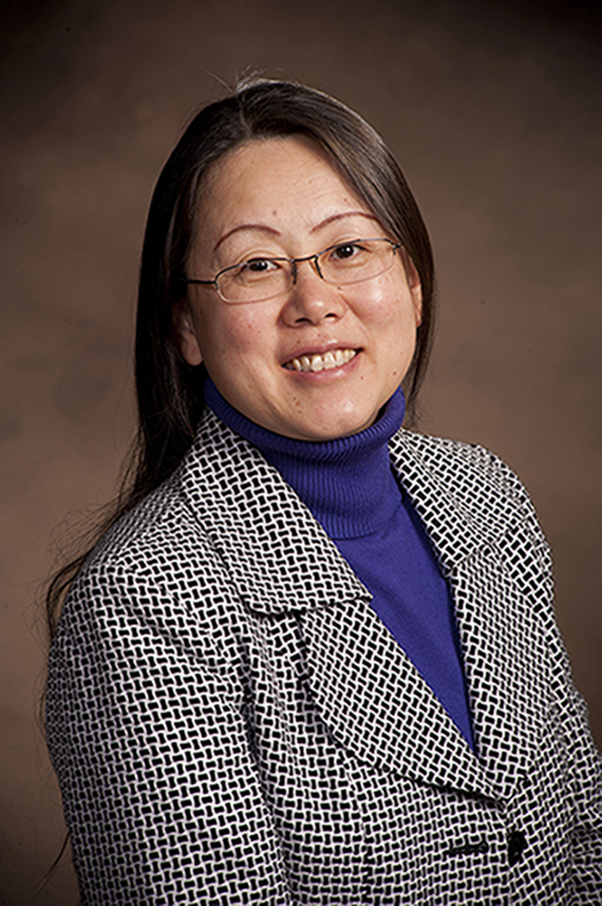
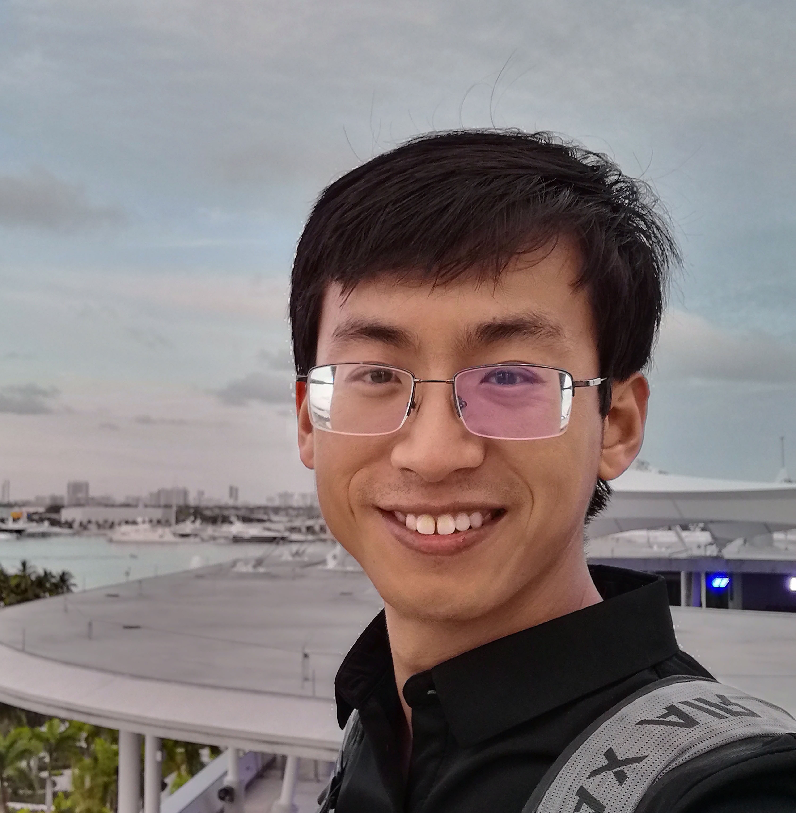
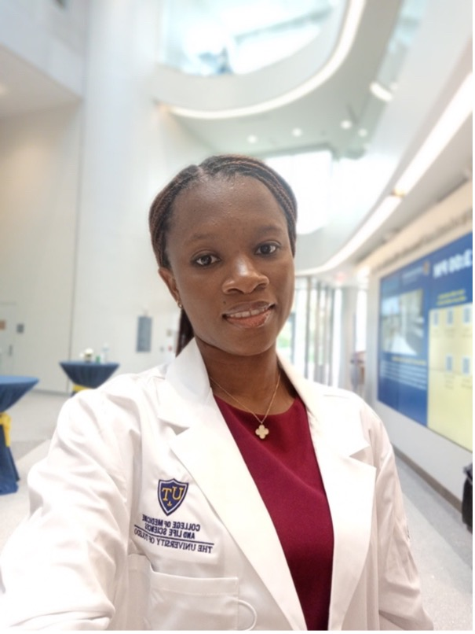

Xiaohong Li
Associate Professor
PI
Dr. Li received her Ph.D. in 2001 from the Institute of Zoology, Chinese Academy of Sciences, Beijing.
She then completed postdoctoral training in the laboratories of Drs. David Ong and Neil Bhowmick at Vanderbilt University, Nashville, Tenn.
Dr. Li was appointed as a research assistant professor in Vanderbilt’s Department of Cancer Biology in 2009, where she was mentored by Dr. Lynn Matrisian.
She joined Van Andel Institute as an assistant professor in Sep 2012. In Jul 2020, Dr. Li joined UT as an associate professor.

Shang Su
Adjunct Assistant Professor
May 2019 - now
Shang is from Jilin Province, China. He got his PhD and BS degrees from the School of Life Sciences at Tsinghua University, China. After a short dip into the biotech industry, he realized he was more enthusiastic about basic scientific research.
Shang came to the US and joined Dr. Xiaohong Li’s group as a post-doc in May 2019. He was promoted to Research Assistant Professor at UT in Jul 2023.
He is currently leading/participating in projects in prostate cancer bone metastasis, tumor dormancy, and drug resistance.

Prisca Chinonso Njoku
PhD student
May 2024 - now
Prisca is from Imo, Nigeria. She earned her Bachelor of Science from Madonna University Nigeria, and her master’s degree from the University of Lagos Nigeria. Prisca started rotation from Jan 16 to Mar 01 and officially joined Dr. Xiaohong Li’s lab as a PhD student in May 2024.
Rocket!
Toledo Rocket
Expectation
Our next Rocket in the lab! We are looking forward to your amazing show!!!
Alumni (By last name)
-
We appreciate the contributions made by the previous members and cherish the memories we share. Wish all of you a better future!
- Samual Ameh, Summer intern
- Ian Berlin, rotation MD/PhD student from May 2023 to Jun 2023
- Jaya Bhandari, rotation PhD student in 2021, now in Dr. Yue Zou's lab in Dept. Cell and Cancer Biology
- Kate Blumenstein, Summer intern
- Jingchen Cao, Visiting scholar (2017-03/2019 in Li Lab), now works at SunStem biotechnology Co. Ltd in China.
- Yiqing Dong, Summer intern
- Rebecca Emery, Summer intern
- Matthew Fini, Summer intern
- Divya Gandra, Intern
- Sourik Ganguly, Ph.D., Postdoctoral fellow
- Jeremy Haskins, M.S., Part-time research technician
- Peter Hsueh, Ph.D. rotation student (MSU)
- Jiahui Hu, Ph.D. rotation student in 2024
- Joel Karsten, Summer intern
- Prisilla Lee, Assistant technician
- Ruihua Liu, Research Assistant (Sep 2018- Jul 2023). She worked for her PhD degree in Inner Mongolia University jointly mentored by Dr. Xiaohong Li and Dr. Haiquan Yu.
- Julienne Louters, Ph.D. rotation student (MSU)
- Austin M. Meadows, B.S., Assistant research technician
- Neil (Xiangqi) Meng, Ph.D., Postdoctoral fellow, now Associate Professor at Sun Yat-sen University Cancer Center in China.
- Ghada Y. T. Mohsen, Intern
- Jared Murdoch, Assistant technician
- Yiming Qin, Research Assistant (2023-2024)
- Junqing Sheng, Visiting scholar, now Associate Professor at Nanchang University in China.
- Abigail Solitro, Ph.D. rotation student (VAIGS)
- Maggie Stangis, M.S., Research Assistant (2019-2021 in Li Lab), now a PhD student at the University of Wisconsin-Madison.
- Isabelle Stiver, Summer intern
- Alex Vander Ark, M.S., Laboratory manager
- Jie Wang, M.S., Visiting scholar
- Jeanie Wedberg, Senior administrative assistant
- Erica Woodford, B.S., Assistant research technician
- Guangyong Yang, B.S., Senior research technician
- Alexandra Yungblut, B.S., rotation MD/PhD student
- Qi Zeng, M.D., Guest Ph.D. student
- Reian Zhang, Summer intern, now studies biochemistry at U Michigan.
- Yawei Zhao, Postdoctoral fellow (2020-2024)
- Yongxia Zheng, Visiting scholar, Associate Professor at Jiaxing College in China.